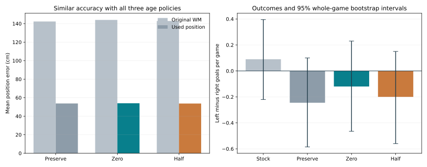
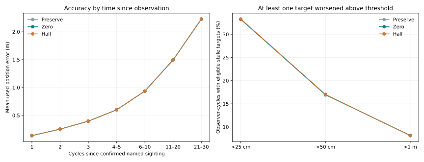

Half is correctly applied. All three policies reduce stale-player position error substantially, but no gameplay advantage has been established. Half has balanced wins/losses and points; zero has the least negative goal difference. There is no statistically established winner among the three policies.
Updated 2026-11-18 22:11 AST. All 600 games /13,200 finalized observers identify cache-v2. Left applies the same frozen model/selector; right is off. Views are adaptive, visual quantization/hearing/fading are disabled, and fullstate is reference only. Earlier 400 live games used the defective cache refresh and are excluded.
| Batch | Goals L–R | W / D / L | Points L–R | Wins excluding draws | Goal diff/game |
|---|---|---|---|---|---|
| Stock baseline (separate run) | 678–660 | 87/44/69 | 305–251 | 55.77% | +0.090 |
| Preserve | 635–684 | 78/22/100 | 256–322 | 43.82% | -0.245 |
| Zero | 678–702 | 78/35/87 | 269–296 | 47.27% | -0.120 |
| Half | 656–696 | 86/28/86 | 286–286 | 50.00% | -0.200 |
Half's 86 wins and 86 losses give 50% among decisive games, Wilson 95% interval [42.61%, 57.39%]. The ordinary 43% win rate includes draws. Points are balanced, but the goal difference is still −40; balanced wins do not imply equal goal margins. These runs have different seeds and trajectories.
| Comparison | Change in goal difference/game | 95% independent-game bootstrap |
|---|---|---|
| Half minus preserve | +0.045 | [-0.455, +0.520] |
| Half minus zero | -0.080 | [-0.580, +0.410] |
| Half minus baseline | -0.290 | [-0.760, +0.180] |
Every interval includes zero. Half improved observed points versus preserve and zero, while its goal difference is worse than zero. Choosing the best metric after seeing three runs is not evidence of a causal improvement. The stock baseline is a separate historical run, not a matched-seed control.
The point difference below is left points minus right points per game, not left points alone. Its independent whole-game bootstrap also includes zero:
| Comparison | Change in points difference/game | 95% bootstrap |
|---|---|---|
| Half minus preserve | +0.330 | [-0.225, +0.885] |
| Half minus zero | +0.135 | [-0.405, +0.675] |

Scope: PlayOn, valid identified stale raw WM (original count >0), confirmed named-sighting age 1–30, true observer distance <50 m and same-cycle truth. Unselected rows retain WM and remain included. Fresh/unsupported tracks are outside these means. Every eligible target-cycle has equal weight; game means are not given equal weight. Counts: 125,021,864 preserve, 123,069,918 zero and 124,636,664 half.
| Metric | Preserve | Zero | Half |
|---|---|---|---|
| Original WM mean cm | 142.32 | 144.00 | 142.87 |
| Used mean cm | 53.78 | 53.99 | 53.70 |
| Mean reduction % | 62.21 | 62.51 | 62.41 |
| Improved by >1 cm % | 54.58 | 55.21 | 54.89 |
| Added error >1 cm % | 5.51 | 5.53 | 5.56 |
| Added error >5 cm % | 5.19 | 5.22 | 5.24 |
| Added error >10 cm % | 4.79 | 4.81 | 4.83 |
| Added error >25 cm % | 3.77 | 3.79 | 3.80 |
| Added error >50 cm % | 1.71 | 1.71 | 1.72 |
| Added error >100 cm % | 0.77 | 0.78 | 0.77 |
| Maximum added error m | 14.28 | 14.95 | 14.68 |
Added error means used error minus original WM error for the same target and cycle. All three reduced their paired mean in all 200 games. This scores raw and corrected estimates along the actual treatment trajectory, not a game that would have happened without correction. Different sample mixes explain small accuracy differences; the weights/selection threshold did not change.
| Named-sighting age | Preserve original→used cm | Zero original→used cm | Half original→used cm |
|---|---|---|---|
| 1 | 24.95→13.68 | 25.24→13.65 | 25.01→13.59 |
| 2 | 50.08→25.33 | 50.73→25.29 | 50.30→25.18 |
| 3 | 75.96→39.69 | 77.09→39.62 | 76.37→39.51 |
| 4–5 | 106.80→59.90 | 107.84→60.06 | 107.16→59.81 |
| 6–10 | 213.00→93.46 | 214.19→93.61 | 213.49→93.41 |
| 11–20 | 467.49→149.37 | 470.25→149.68 | 469.28→149.49 |
| 21–30 | 812.62→222.52 | 817.31→223.01 | 816.19→222.95 |

Observer-cycle populations with at least one eligible stale target below 50 m: 10,069,393 preserve, 9,948,791 zero, 10,065,442 half.
| Eligible observer-cycle contains… | Preserve | Zero | Half |
|---|---|---|---|
| At least one target improved >25 cm | 88.06% | 88.04% | 87.92% |
| At least one target worsened >25 cm | 33.25% | 33.23% | 33.32% |
| At least one target worsened >50 cm | 17.00% | 16.92% | 17.00% |
| At least one target worsened >1 m | 8.12% | 8.17% | 8.14% |
| Both improved and worsened >25 cm | 31.85% | 31.83% | 31.89% |
| Target within 10 m worsened >25 cm | 4.17% | 4.17% | 4.22% |
These are correlated exposures, not percentages of wrong actions or goals caused. A frame can have many improved objects and one important damaged one. Half's originally accurate WM subgroup (<10 cm) changed mean error 1.40→4.83 cm; 7.47% added >25 cm. Truth defines this diagnostic group; it is not an available live selection rule.
Both selected cycles reproduce in the original Python model pipeline. The severity-weighted selector score is not calibrated positional confidence.
Each policy uses ten evenly spaced complete games /110 left observers, selected without consulting outcomes. These are descriptive subsets, not full 200-game context audits. True distances are reporting labels only.
| Situation | Preserve original→used cm | Zero original→used cm | Half original→used cm |
|---|---|---|---|
| Target within 2 m of ball | 46.94→33.18 | 45.17→31.32 | 46.52→32.96 |
| Target 2–5 m from ball | 51.62→34.12 | 49.86→32.19 | 50.13→33.34 |
| Target at least 5 m from ball | 146.19→54.35 | 145.49→54.40 | 147.95→54.22 |
| Observer within 3 m of ball | 204.64→68.68 | 214.67→69.65 | 204.46→68.27 |
| Next-cycle forecast; same valid WM velocity | 70.79→47.05 | 70.55→46.18 | 71.09→46.65 |
Ball-near stale-player gains are smaller than aggregate gains. The simple next-cycle check uses the same valid WM velocity for both starting positions and consecutive PlayOn truth; it is not a complete action/intercept simulation. Neither ball state nor player velocity/body is corrected by this model.
The three choices mostly alter how decision code treats an inferred position's age. Half avoids a fake count-zero sighting while reducing some old-age margins; it neither bounds the position error nor updates velocity/body/seen ages. No count policy has demonstrated a gameplay advantage. Keep prediction opt-in; retain it as a strong position estimator, not an established team-strength gain. Further work should link mistakes to actual passes/intercepts/action changes and use matched-seed, swapped-side controls before another model-size sweep.
cd /home/nader/workspace/denoise
exp=rcssserver-denoise/experiments/exp5/exp5-s1
.venv-exp5-s1/bin/python "$exp/code/report_player_gap_three_counts.py" \
logs/exp5-s1/live-analysis/preserve-cache-v2-200-20261118 \
logs/exp5-s1/live-analysis/zero-cache-v2-200-20261118 \
logs/exp5-s1/live-analysis/half-cache-v2-200-20261118 \
"$exp/reports/live-count-cache-v2-200" \
--closeout rcssserver-denoise/experiments/exp5/reports/final
The batch, context, scene-risk, runtime and Python-parity JSON evidence is alongside this report. Half launch details · Earlier preserve failure clips.